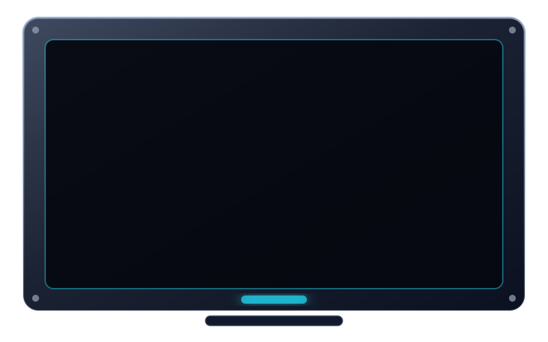
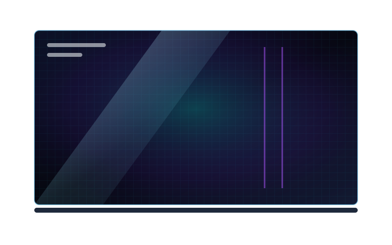
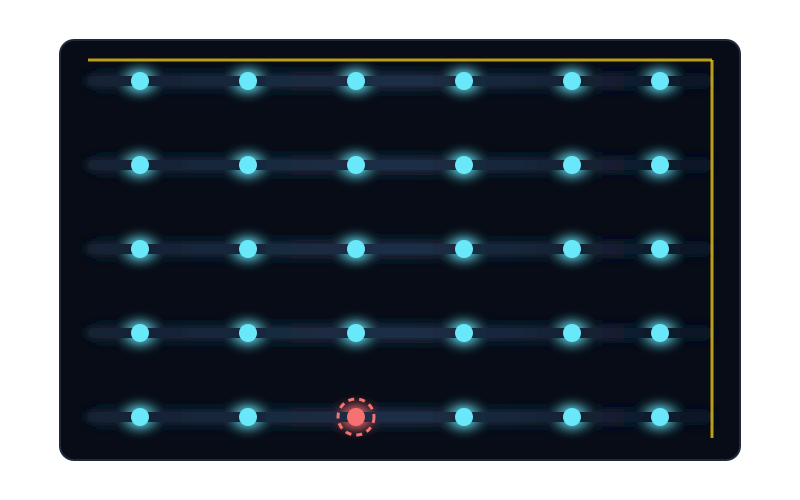
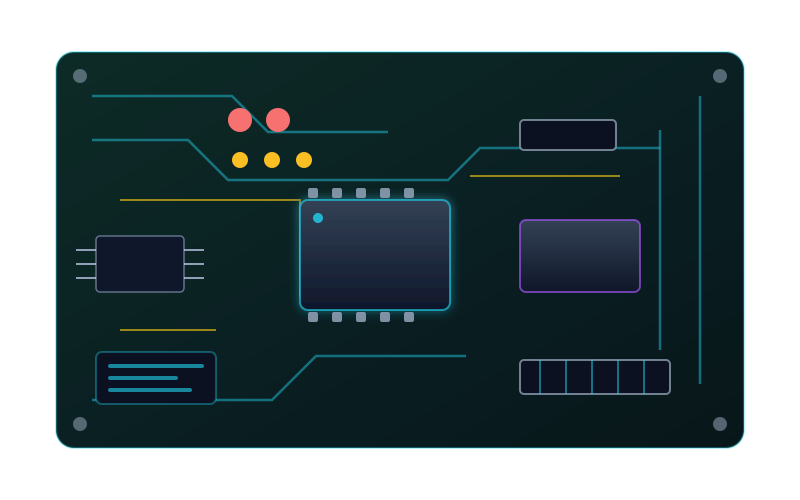
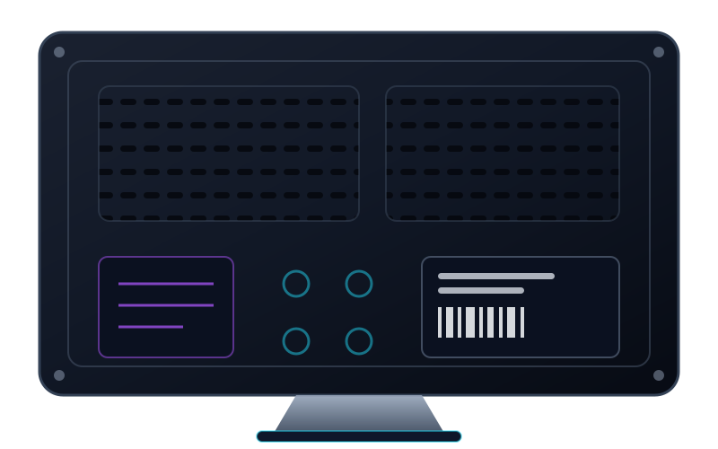

مرکز تخصصی تعمیر تلویزیون و نمایشگر
داخل یک تلویزیون چه میگذرد؟
با اسکرول، پنج لایه دستگاه از هم باز میشوند و خدمت تعمیر هر قطعه کنارش ظاهر میشود.
لایههای دمو فعال است؛ تصویر و متن هر لایه را از «سفارشیسازی ← پیکسوا: لایههای دمو» یا پنل المنتور جایگزین کنید.





-
قاب رویی و فریم دستگاه
فریم ترکخورده یا بدنه ضربهدیده با قطعه فابریک همان مدل تعویض میشود.
برآورد هزینه این خدمت -
صفحه نمایش شیشهای (پنل)
بندینگ COF و ترمیم خطوط عمودی/افقی بدون تعویض شیشه.
برآورد هزینه این خدمت -
بکلایت نئونی
تعویض ریسه LED فابریک و تست یکنواختی نور پسزمینه.
برآورد هزینه این خدمت -
برد اصلی (مینبرد)
عیبیابی مینبرد، HDMI و وایفای با اسیلوسکوپ و پروگرامر.
برآورد هزینه این خدمت -
قاب پشتی و برد تغذیه
رفع چشمک چراغ و خاموشی کامل با قطعه همتراز و تست بار.
برآورد هزینه این خدمت
ویدیو یا صدای دستگاه را بفرستید تا تحلیل شود
یک ویدیوی کوتاه از خرابی یا صدای دستگاه را آپلود کنید؛ خروجی تحلیل به همراه کد پیگیری برای شما ثبت میشود.
فایلها فقط برای عیبیابی پرونده شما استفاده میشوند و پس از بستهشدن پرونده پاک میگردند.
دستگاه را بچرخانید و قطعه معیوب را لمس کنید
با ماوس مدل را بچرخانید؛ روی نقطههای قرمز کلیک کنید تا برآورد قیمت همان قطعه باز شود.
مدل و نقطههای دمو فعال است؛ آدرس صحنه Spline و هاتاسپیتها را از «سفارشیسازی ← پیکسوا: سینمایی…» یا پنل المنتور جایگزین کنید.
تعمیرکار کجاست؟
مسیر حرکت تعمیرکار تا محل شما روی نقشه تاریک روشن میشود؛ با کد پیگیری، موقعیت واقعی پرونده خودتان را ببینید.
حالت دمو: نقشه با یک مسیر زنده نمایشی پر میشود. مبدأ، مقصد و سرعت از «سفارشیسازی ← پیکسوا: سینمایی…» خوانده میشود و با کد پیگیری واقعی مشتری جایگزین میگردد.